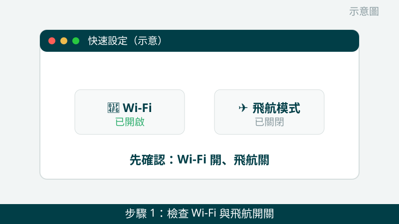
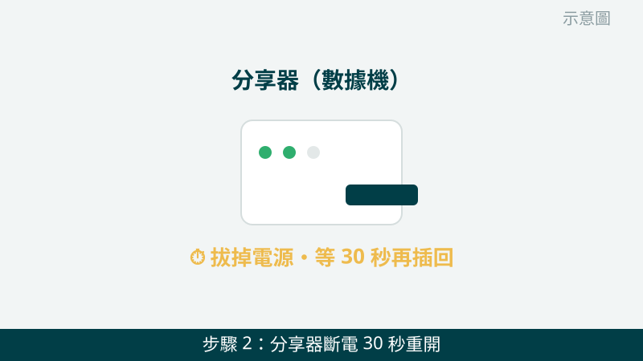
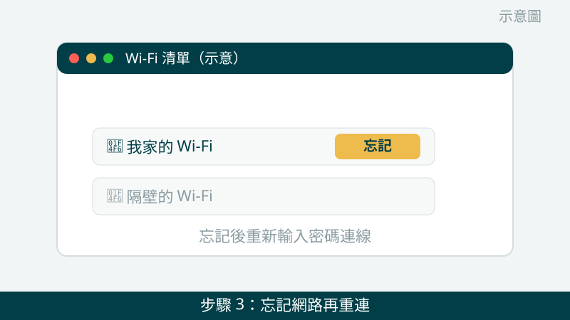
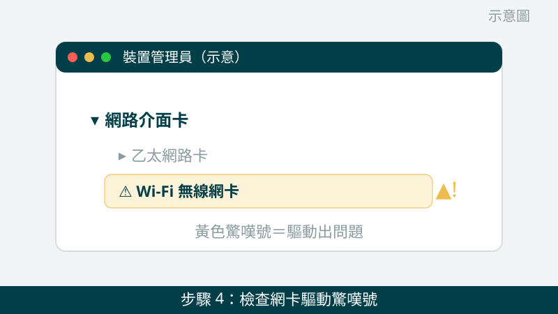
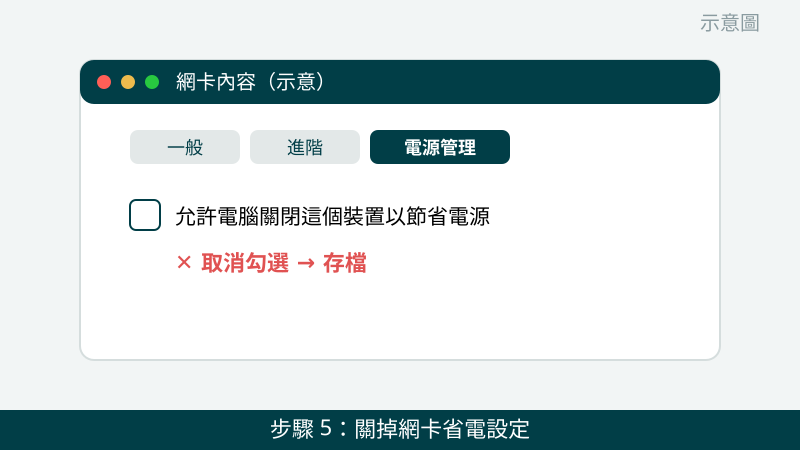
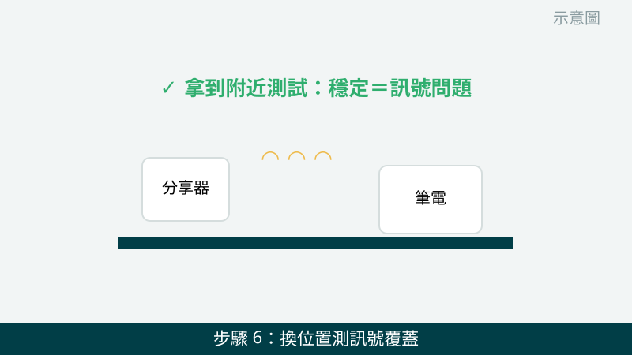

視訊開到一半斷線、檔案傳到一半卡住，確實很惱人。但請先放心：Wi-Fi 問題有一半以上是設定或分享器當機，不一定是電腦壞掉。開始之前，請您先做一個關鍵判斷，後面 6 步的方向就看它：
- 只有這台電腦連不上，其他手機、平板都正常 → 問題多半在這台電腦的驅動、設定或網卡，重點查第 3～6 步。
- 家裡全部裝置都斷、或都連不上 → 問題多半在分享器或網路業者那邊，重點做第 2 步，必要時聯絡您的網路業者。
Wi-Fi 錯誤畫面先傳給我們看
把 Wi-Fi 圖示的錯誤訊息、裝置管理員的網路介面卡狀態拍下來傳 LINE，通常能先看出是驅動、設定還是硬體方向。先免費評估、報價透明，確認後再預約維修。
Wi-Fi 連不上、斷線自救檢查清單（由簡到難）
- 1. 先看飛航模式和 Wi-Fi 開關有沒有被誤觸。筆電鍵盤上常有 Wi-Fi／飛航模式的快捷鍵，不小心按到就會整台斷網。先確認右下角 Wi-Fi 圖示是開啟狀態、飛航模式是關閉的；有些筆電機身側邊還有實體無線開關，也請順手確認。怎麼判斷：開關打開後 Wi-Fi 清單立刻出現，就是誤觸而已。

示意圖（非官方截圖） - 2. 分享器（數據機）電源拔掉等 30 秒再插回，電腦也重開機。分享器連續開幾週沒休息也會當機。請把分享器電源線拔掉，等 30 秒再插回，等燈號恢復正常後，電腦也完整重開機一次再連。怎麼判斷：全部裝置一起恢復，就是分享器當機；只有電腦還是連不上，再往下查電腦本身。

示意圖（非官方截圖） - 3. 把家裡 Wi-Fi「忘記」再重新連一次。點 Wi-Fi 清單 → 對家裡的網路按右鍵 →「忘記」，再重新點一次、重新輸入密碼連線。舊的連線設定損壞時，忘記重連是最快的一招。怎麼判斷：重連後能穩定用一陣子，就是舊設定出問題；如果還是出現「無法連線到這個網路」，請往第 4 步查。

示意圖（非官方截圖） - 4. 檢查網卡驅動有沒有驚嘆號或被停用。在開始按右鍵 →「裝置管理員」→ 展開「網路介面卡」，看 Wi-Fi 網卡那一項有沒有黃色驚嘆號、或被停用（向下箭頭）。有驚嘆號時先按右鍵「解除安裝裝置」再重開機，Windows 會自動重裝驅動。怎麼判斷：重開機後驚嘆號消失、Wi-Fi 清單回來，就是驅動問題。

示意圖（非官方截圖） - 5. 關掉網卡的省電設定。筆電為了省電，有時會在閒置時把網卡關掉，就表現成「用一用突然斷線」。在裝置管理員的 Wi-Fi 網卡按右鍵 →「內容」→「電源管理」頁籤，把「允許電腦關閉這個裝置以節省電源」取消勾選。怎麼判斷：改完之後，閒置一段時間再回來，Wi-Fi 還在線，就是省電設定在作怪。

示意圖（非官方截圖） - 6. 換個位置、換個距離試試看。分享器放在櫃子深處、隔了兩道牆、或旁邊有微波爐、藍牙裝置干擾，訊號都會變弱變不穩。先把筆電拿到分享器附近測試：近距離穩定、遠處才斷，就是訊號覆蓋問題，可以考慮調整分享器位置。怎麼判斷：距離一拉近就穩定，問題在訊號強度，不在電腦。

示意圖（非官方截圖）
出現這些情況，就別再自己試了
- 裝置管理員裡根本沒有 Wi-Fi 網卡這一項，或重裝驅動後還是抓不到任何訊號——可能是網卡硬體故障，需要檢測確認
- 分享器燈號異常（例如紅燈恆亮、一直重開），或全部裝置都斷——請先聯絡您的網路業者確認線路，不要自行把分享器恢復原廠設定，恢復後業者帳號密碼要重設，反而更麻煩；不確定時請先拍照問我們
- 想自己拆機換網卡但不確定怎麼拆——請先拍照問我們，不要硬拆，筆電內接網卡常有天線小接頭，拉斷了反而更貴
- 有人叫您把 Wi-Fi 密碼、業者帳號密碼貼到不明網站或傳給陌生人——請不要照做，帳號密碼只給您信任的對象
如果您的電腦是只有在特定房間才斷線、客廳都正常，那多半是訊號覆蓋問題，不是電腦故障。我們的檢測會先幫您分清是電腦、分享器還是線路問題，再報價給您，不會要您先換一台分享器賭一把。
常見問題
Wi-Fi 連不上是不是網卡壞了？
不一定。最常見的原因是驅動程式出問題、省電設定把網卡關掉、或是分享器本身當機。先照本文的順序排除，只有在驅動重裝、換過設定還是抓不到任何 Wi-Fi 訊號時，才比較可能是網卡硬體故障，需要檢測確認。
Wi-Fi 一直斷線，換分享器就會好嗎？
不一定。如果只有一台電腦會斷，其他手機、平板都正常，問題多半出在那台電腦的驅動或設定，換分享器沒有幫助。請先確認是單台還是全部裝置出問題，再決定要不要換設備，才不會白花錢。
Wi-Fi 問題拍照傳 LINE 就可以先判斷嗎？
可以先給方向。把 Wi-Fi 圖示的錯誤訊息、裝置管理員裡網路介面卡的狀態拍下來傳給我們，通常能先看出是驅動、設定還是硬體方向；要完全確認，還是需要實機檢測，這部分評估不收費，請放心傳。